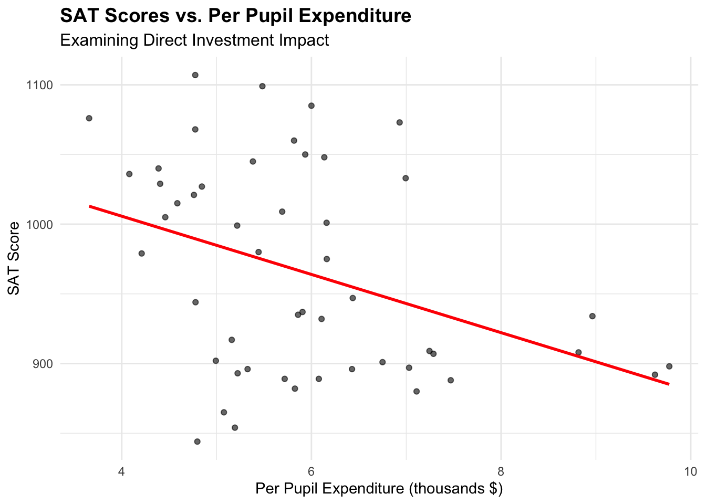
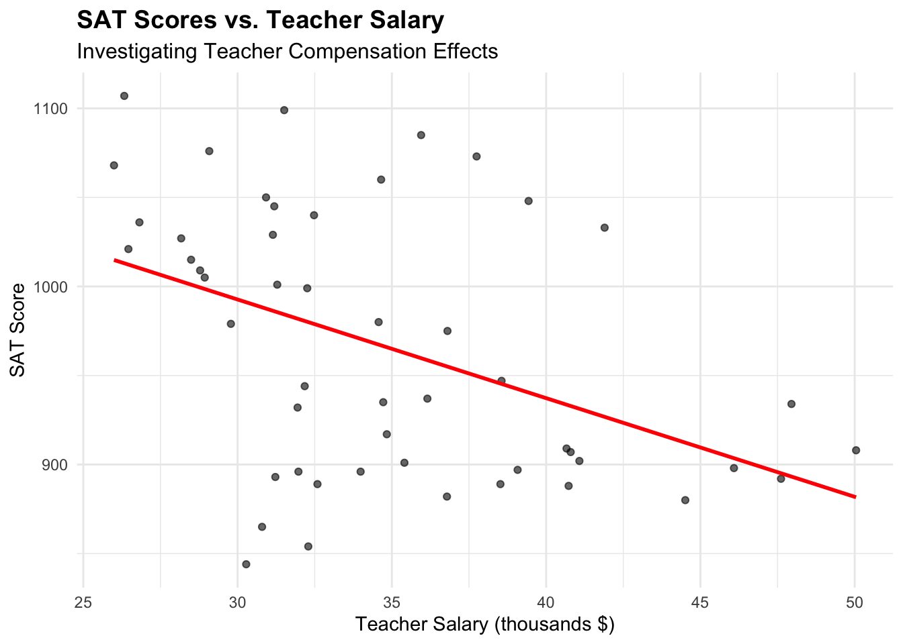
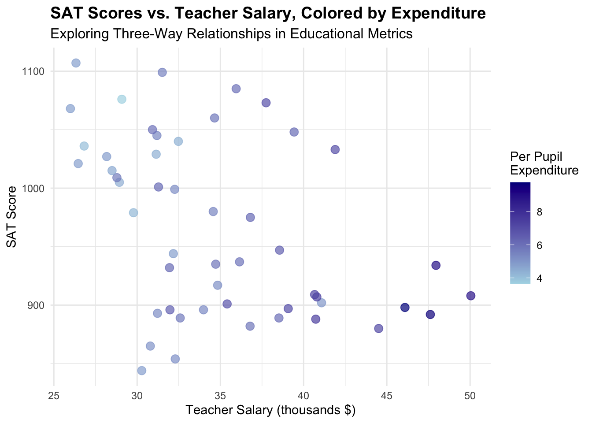
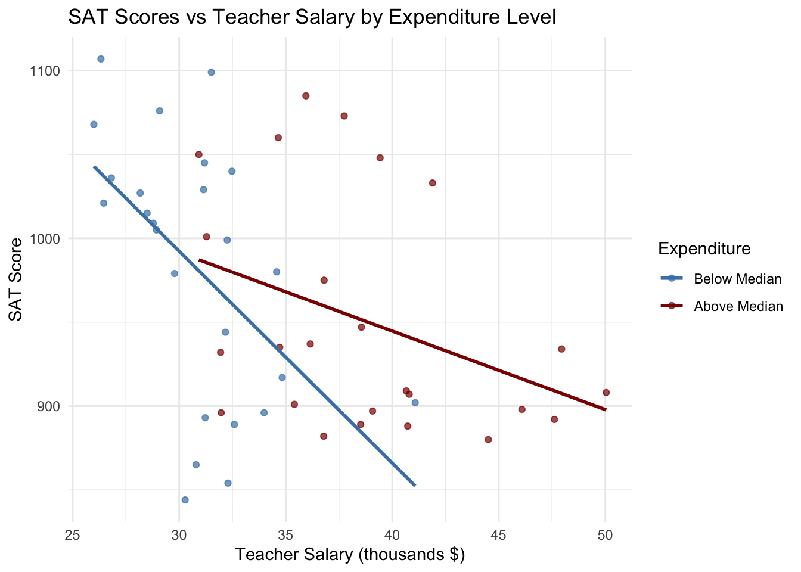
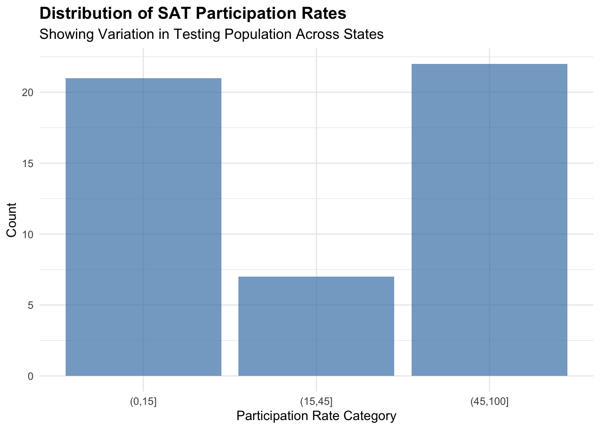
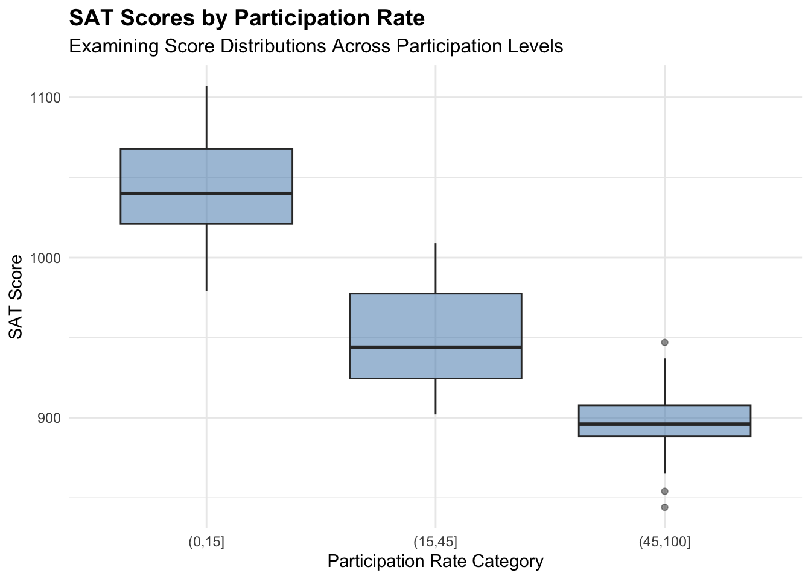
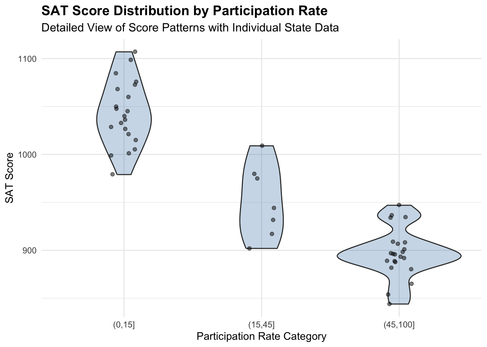
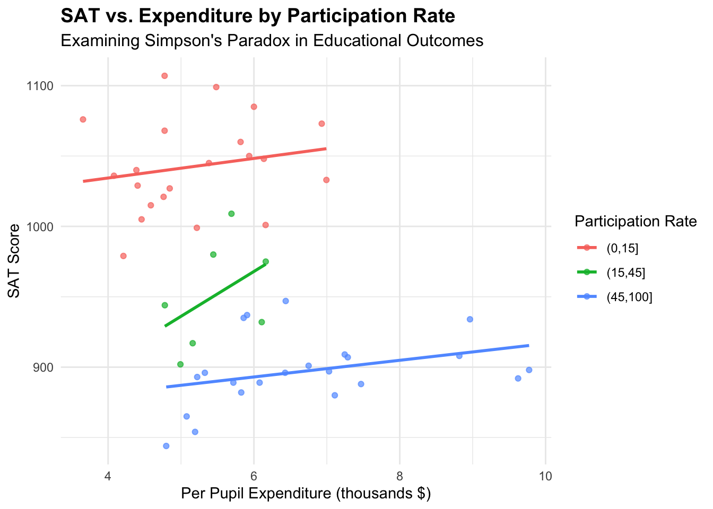

── Attaching core tidyverse packages ──────────────────────── tidyverse 2.0.0 ──
✔ dplyr 1.1.4 ✔ readr 2.1.5
✔ forcats 1.0.0 ✔ stringr 1.5.1
✔ ggplot2 3.5.1 ✔ tibble 3.2.1
✔ lubridate 1.9.4 ✔ tidyr 1.3.1
✔ purrr 1.0.4
── Conflicts ────────────────────────────────────────── tidyverse_conflicts() ──
✖ dplyr::filter() masks stats::filter()
✖ dplyr::lag() masks stats::lag()
ℹ Use the conflicted package (<http://conflicted.r-lib.org/>) to force all conflicts to become errors11 Multivariate Viz
11.1 Purpose
This document comprehensively explores multivariate visualization techniques using education and SAT score data from U.S. states. We investigate the relationships between SAT scores, educational spending, teacher salaries, and participation rates across different states through statistical analysis and visualization. We aim to uncover meaningful patterns and potential causal relationships in educational outcomes while highlighting the importance of considering confounding variables in educational data analysis.
11.2 Environment Setup
11.3 Exercise 1: SAT Scores Distribution
11.3.1 Part a: Visualizing SAT Score Distribution
11.3.2 Part b: Distribution Analysis
The SAT score distribution reveals several key insights about educational outcomes across states. The scores range from approximately 850 to 1120 points, demonstrating substantial variation in performance. A notable bimodal pattern emerges with distinct peaks around 900 and 1050 points, reflecting fundamental differences between states where SAT serves as the primary college entrance exam versus those favoring the ACT. States with higher SAT participation rates typically exhibit lower average scores due to their more diverse testing population, while states with lower participation rates often show higher averages due to a more selective testing pool.
11.4 Exercise 2: SAT Scores vs. Spending
11.4.1 Part a: Expenditure and Salary Relationships
p1 <- ggplot(education, aes(x = expend, y = sat)) +
geom_point(alpha = 0.6) +
geom_smooth(method = "lm", se = FALSE, color = "red") +
labs(title = "SAT Scores vs. Per Pupil Expenditure",
subtitle = "Examining Direct Investment Impact",
x = "Per Pupil Expenditure (thousands $)",
y = "SAT Score") +
theme_minimal() +
theme(plot.title = element_text(size = 14, face = "bold"),
plot.subtitle = element_text(size = 12))
p2 <- ggplot(education, aes(x = salary, y = sat)) +
geom_point(alpha = 0.6) +
geom_smooth(method = "lm", se = FALSE, color = "red") +
labs(title = "SAT Scores vs. Teacher Salary",
subtitle = "Investigating Teacher Compensation Effects",
x = "Teacher Salary (thousands $)",
y = "SAT Score") +
theme_minimal() +
theme(plot.title = element_text(size = 14, face = "bold"),
plot.subtitle = element_text(size = 12))
p1`geom_smooth()` using formula = 'y ~ x'
`geom_smooth()` using formula = 'y ~ x'
11.4.2 Part b: Analysis of Relationships
The relationship between educational investment and SAT performance presents an intriguing paradox. Both per-pupil expenditure and teacher salary demonstrate unexpected negative correlations with SAT scores, contrary to what one might intuitively expect. This counterintuitive pattern strongly suggests the presence of confounding variables, particularly participation rates and regional differences in testing preferences. States that invest more in education often have higher SAT participation rates, which typically results in lower average scores due to a more diverse testing population.
11.5 Exercise 3: Trivariate Relationship
ggplot(education, aes(x = salary, y = sat, color = expend)) +
geom_point(size = 3, alpha = 0.7) +
scale_color_gradient(low = "lightblue", high = "darkblue") +
labs(title = "SAT Scores vs. Teacher Salary, Colored by Expenditure",
subtitle = "Exploring Three-Way Relationships in Educational Metrics",
x = "Teacher Salary (thousands $)",
y = "SAT Score",
color = "Per Pupil\nExpenditure") +
theme_minimal() +
theme(plot.title = element_text(size = 14, face = "bold"),
plot.subtitle = element_text(size = 12),
legend.position = "right")
11.6 Exercise 4: Discretized Expenditure
education %>%
mutate(expend_group = cut(expend,
breaks = quantile(expend, probs = c(0, 0.5, 1)),
labels = c("Below Median", "Above Median"),
include.lowest = TRUE)) %>%
ggplot(aes(x = salary, y = sat, color = expend_group)) +
geom_point(alpha = 0.7) +
geom_smooth(formula = y ~ x, method = "lm", se = FALSE) +
scale_color_manual(values = c("steelblue", "darkred")) +
labs(title = "SAT Scores vs Teacher Salary by Expenditure Level",
x = "Teacher Salary (thousands $)",
y = "SAT Score",
color = "Expenditure") +
theme_minimal()
By discretizing states into expenditure groups, we observe distinct patterns in the relationship between teacher salaries and SAT scores. States with higher expenditure levels consistently show higher teacher salaries but generally lower SAT scores. The slope of the relationship between salary and SAT scores differs between expenditure groups, suggesting that the impact of teacher compensation on student performance varies depending on overall educational investment levels. This variation might reflect differences in resource allocation efficiency or underlying socioeconomic factors that influence educational outcomes.
11.7 Exercise 5: Participation Rate Impact
11.7.1 Part a: Participation Rate Distribution
ggplot(education, aes(x = fracCat)) +
geom_bar(fill = "steelblue", alpha = 0.7) +
labs(title = "Distribution of SAT Participation Rates",
subtitle = "Showing Variation in Testing Population Across States",
x = "Participation Rate Category",
y = "Count") +
theme_minimal() +
theme(plot.title = element_text(size = 14, face = "bold"),
plot.subtitle = element_text(size = 12))
11.7.2 Part b: Score Distribution by Participation
p3 <- ggplot(education, aes(x = fracCat, y = sat)) +
geom_boxplot(fill = "steelblue", alpha = 0.5) +
labs(title = "SAT Scores by Participation Rate",
subtitle = "Examining Score Distributions Across Participation Levels",
x = "Participation Rate Category",
y = "SAT Score") +
theme_minimal() +
theme(plot.title = element_text(size = 14, face = "bold"),
plot.subtitle = element_text(size = 12))
p4 <- ggplot(education, aes(x = fracCat, y = sat)) +
geom_violin(fill = "steelblue", alpha = 0.3) +
geom_jitter(width = 0.1, alpha = 0.5) +
labs(title = "SAT Score Distribution by Participation Rate",
subtitle = "Detailed View of Score Patterns with Individual State Data",
x = "Participation Rate Category",
y = "SAT Score") +
theme_minimal() +
theme(plot.title = element_text(size = 14, face = "bold"),
plot.subtitle = element_text(size = 12))
p3

The relationship between participation rates and SAT scores shows a clear inverse pattern. In states with low participation rates, SAT-takers are predominantly high-achieving students specifically targeting selective colleges. Conversely, states with high participation rates include a broader spectrum of academic achievement levels, naturally leading to lower average scores but potentially providing a more representative measure of overall educational outcomes. This pattern is particularly evident in the violin plot, which reveals the changing shape and spread of score distributions across participation categories.
11.7.3 Part c: Expenditure and Participation Relationship
ggplot(education, aes(x = expend, y = sat, color = fracCat)) +
geom_point(alpha = 0.7) +
geom_smooth(formula = y ~ x, method = "lm", se = FALSE) +
labs(title = "SAT vs. Expenditure by Participation Rate",
subtitle = "Examining Simpson's Paradox in Educational Outcomes",
x = "Per Pupil Expenditure (thousands $)",
y = "SAT Score",
color = "Participation Rate") +
theme_minimal() +
theme(plot.title = element_text(size = 14, face = "bold"),
plot.subtitle = element_text(size = 12),
legend.position = "right")
11.7.4 Part d: Simpson’s Paradox Analysis
The relationship between educational spending and SAT scores presents a classic example of Simpson’s Paradox, highlighting the critical importance of considering participation rates in educational outcome analysis. While the aggregate data shows a negative correlation between spending and SAT scores, examining the relationship within each participation rate category reveals a positive correlation between spending and scores. This paradox occurs because states with higher educational spending typically have higher participation rates, which naturally correlates with lower average scores due to the broader testing population.
The participation rate serves as a crucial confounding variable that explains the seemingly counterintuitive negative relationship in the aggregate data. This finding demonstrates how aggregate statistics can mask more nuanced relationships in educational data and emphasizes the importance of controlling for participation rates when evaluating the effectiveness of educational spending. Understanding this paradox is essential for policymakers and educators in making informed decisions about resource allocation and interpreting educational outcome data accurately.